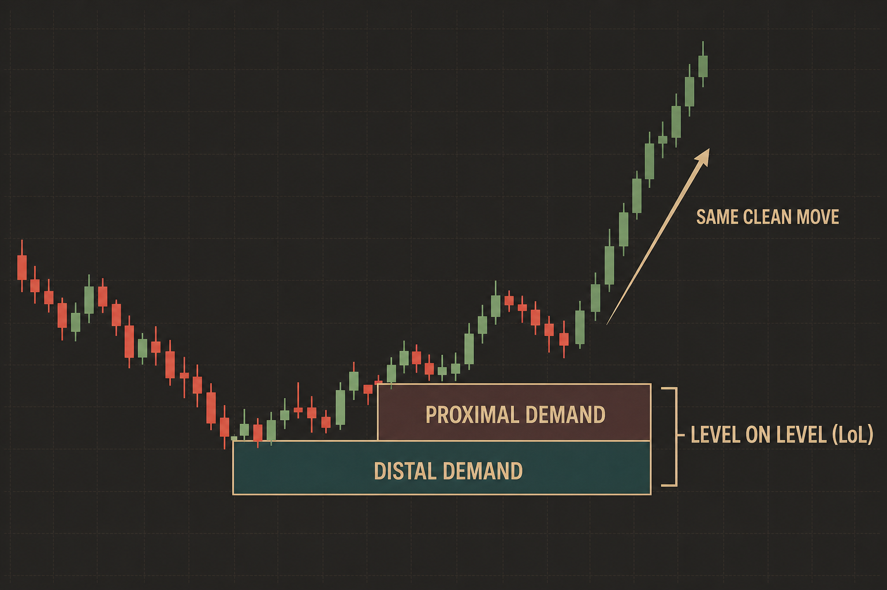
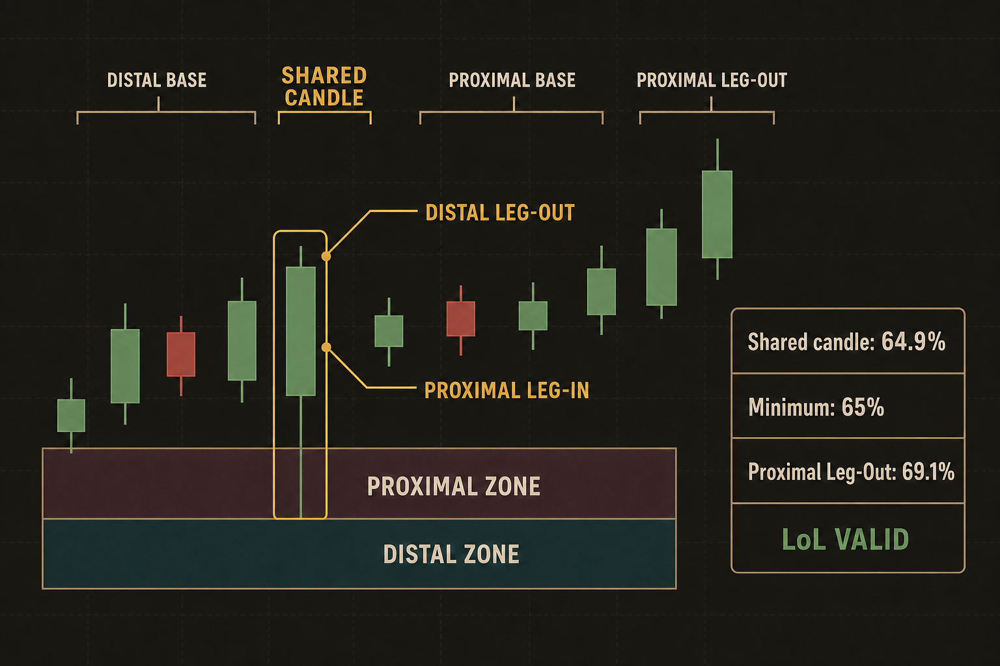
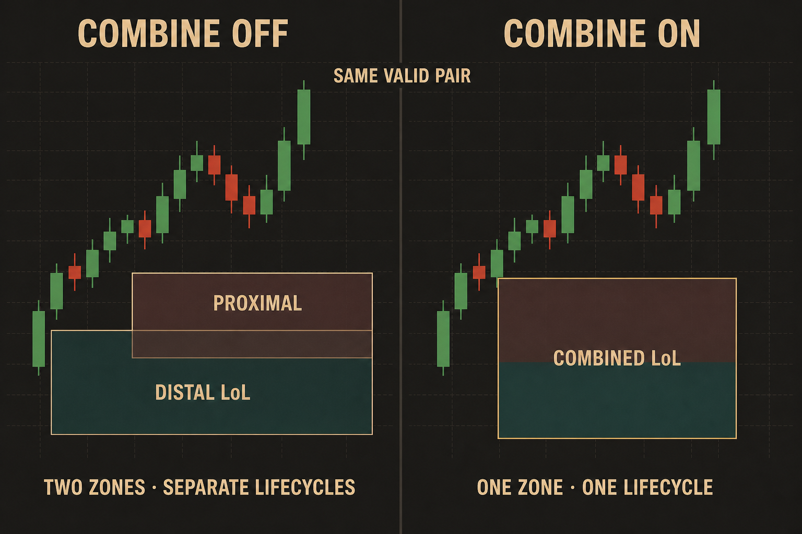

LoL Detection
LoL means Level on Level. It appears when two nearby Supply zones or two nearby Demand zones belong to one clean price move.
The indicator does not mark every pair of close zones as LoL. It first detects a valid new zone, then checks whether an older zone can be its LoL partner.
The simple idea
For Demand:
price moves up
new Demand zone <- proximal level, closer to current price
older Demand zone <- distal level, farther from current price
For Supply, the order is reversed because price moves down.
Both zones must be the same type:
- Demand can pair only with Demand.
- Supply can pair only with Supply.
- Demand and Supply never form LoL together.

Demand example: the older distal zone sits below the newer proximal zone, and both belong to the same clean bullish move.
What the indicator checks
The new zone must first pass normal zone detection. LoL cannot rescue an invalid new proximal zone.
After that, the indicator checks the following rules:
- The older zone formed before the new zone.
- Both zones are Demand or both zones are Supply.
- The older distal boundary is still intact.
- The zones overlap or are close enough.
- If the context check is enabled, both zones must belong to one clean price-action sequence.
Only then does the dashboard show LoL.
How close is close enough?
The allowed gap is automatic. There is no separate gap setting.
The indicator compares the gap with the width of the wider zone:
allowed gap = width of the wider zone
If the zones overlap, the gap is already acceptable. If the gap is larger than the wider zone, the pair is not LoL.
Where the older partner comes from
The detector checks possible partners in this order.
1. Active zone
The first choice is a normal active zone of the same type.
If several active zones are available, the indicator prefers an overlapping zone. Otherwise it uses the closest qualifying zone.
2. Recently tested or broken zone
An older zone may be tested shortly before the new zone finishes forming. It is no longer active as a normal zone, but it may still be part of the same LoL structure.
The indicator can use it only when:
- it is still recent;
- its distal boundary was not broken;
- the complete LoL pair passes all normal LoL rules.
3. Recently rejected formation
A formation may fail immediate activation because price already tested its proximal boundary. Intraday keeps one hidden recent candidate for Demand and one for Supply.
This candidate:
- is used only for LoL;
- is not shown as a normal zone;
- does not create an alert;
- does not become a Flip fact;
- expires after
Max. Base Candles + 2bars; - disappears immediately when its distal boundary is broken.
The memory is fixed at two candidates, so it does not grow over time.
4. Shared-candle pattern
Two directly stacked zones can share one candle:
Distal Leg-In -> Distal Base -> SHARED CANDLE -> Proximal Base -> Proximal Leg-Out
|
+-- Leg-Out of the distal zone
+-- Leg-In of the proximal zone

Shared-candle example: the shared candle is qualified as the proximal Leg-In. It does not need to pass the normal Leg-Out Body/Range or Range/ATR requirements, while the proximal Leg-Out remains fully valid.
The shared candle can be a good Leg-In even when it fails the stricter normal Leg-Out Body/Range requirement, the minimum Leg-Out Range/ATR requirement, or both.
In this special case, the indicator reconstructs the distal formation only after the proximal zone is valid. The distal formation never becomes a standalone normal zone.
The shared candle must still:
- move in the correct direction;
- pass
Min. Leg-In Body Size (% of Range); - leave the distal Base imbalance intact.
The earlier Leg-In and every Base candle must also be valid. Each Base candle still has to pass its own Body/Range limit, but the shared candle is not used as a Leg-Out range cap for Require Base Range ≤ Leg-Out Range. The usual gap, context, overlap, and distal-integrity policies still apply.
Important
The shared-candle exception applies only to the distal partner. The final Leg-Out of the new proximal zone must still pass normal zone detection.
For example:
- shared candle Body/Range:
64.9%; - proximal Leg-Out Body/Range:
69.1%; - configured minimum:
65%.
The shared candle fails as a normal Leg-Out, but it passes the Leg-In rule and the proximal Leg-Out passes normal detection. The pair can therefore become LoL through shared-candle reconstruction.
With a 70% minimum, the same example does not form because the proximal Leg-Out is only 69.1%.
LoL settings
Open the indicator settings and use the LoL Settings group.
| Setting | Default | Simple meaning |
|---|---|---|
Show LoL Labels |
On | Shows labels for the LoL level and its partner. It changes only the display. |
Combine overlapping LoL |
Off | When enabled, two overlapping zones become one combined box. |
LoL Context — single price action |
On | Rejects pairs that do not look like one continuous price move. |
LoL Context — band tolerance (× pair height) |
0.25 |
Adds a margin around the pair while searching for unrelated structure. A higher value is more forgiving. |
LoL Context — max retrace ratio |
0.70 |
Rejects a pair when price retraces too deeply between the two formations. 1.00 disables this retracement limit. |
LoL Debug — rejection reason |
Off | Shows a CTX label when the gap passes but the context check rejects the pair. |
The Style tab also contains:
LoL Zone Color;LoL Combined Border Color.
These colors do not change detection.
Combined and separate display

Both sides show the same valid pair. The setting changes its display and lifecycle, not whether LoL is detected.
Combine overlapping LoL: Off
This is the default behavior.
- The proximal and distal zones remain separate.
- The distal LoL uses its wider Base boundaries.
- A test of the proximal partner removes only that partner.
- The distal LoL remains active as the trade level until its own proximal boundary is tested.
- Non-overlapping LoL pairs always use this behavior.
Combine overlapping LoL: On
This applies only when the two Base areas overlap.
- Both zones become one combined box.
- The box covers the complete price range of the pair.
- The yellow border identifies the combined version.
- The combined box mitigates as one zone.
Turning this option on does not make detection easier. It changes what happens only after a valid overlapping LoL pair is found.
Single price-action context
When LoL Context — single price action is enabled, the indicator applies two checks.
No unrelated structure
Another same-side zone must not form far outside the LoL pair while the pair is developing.
The band-tolerance setting controls how much space around the pair is still treated as part of the same structure.
No deep escape and return
Price must not travel far away and then return deeply before the new zone forms.
The maximum-retrace setting controls how much retracement is allowed.
If the context check is disabled, these two rules are skipped. Zone validity, same-side pairing, distance, and distal integrity are still required.
LoL lifecycle policy
The indicator highlights only one active Demand LoL and one active Supply LoL at a time.
When a newer LoL of the same type is confirmed:
- the older LoL returns to its normal zone boundaries;
- the newer pair becomes the current LoL;
- the older LoL may be restored later if the newer structure is mitigated and the older structure is still clean.
This prevents several same-side LoL structures from competing for the same dashboard state.
LoL, Originality, and Flip
These are separate facts.
A zone can be:
- Original and LoL;
- Non-Original and LoL;
- Flip and LoL;
- not Flip and LoL.
Detecting LoL does not change Originality and does not automatically create a Flip Zone.
What appears on the chart
When LoL is confirmed:
- the dashboard shows
LoLin the LoL column; - the zone uses the configured LoL color;
- optional labels identify the distal and proximal parts;
- a combined pair uses the configured combined border color.
The Intraday indicator publishes only LTF facts. HTF Trend, HTF Location, final grading, and setup notification belong to Swing and the platform correlation layer.
Why an expected LoL may be missing
Check these points in order:
- Is the new proximal zone valid? Its final Leg-Out must pass normal detection.
- Are both zones the same type? Demand cannot pair with Supply.
- Is the older distal boundary intact? A distal break cancels the candidate.
- Are the zones close enough? The gap cannot be wider than the wider zone.
- Did the recent-candidate window expire? It lasts
Max. Base Candles + 2bars. - Did the context rule reject the pair? Enable
LoL Debug — rejection reasonand look for aCTXlabel. - Are you expecting
Combine overlapping LoLto create LoL? It does not. It only controls how an already valid LoL pair is drawn and mitigated. - Is this a shared-candle pattern? The shared candle may use the exception, but the proximal Leg-Out may not.
For the implementation details of recent and shared-candle fallbacks, see LoL Fallback Correlation.